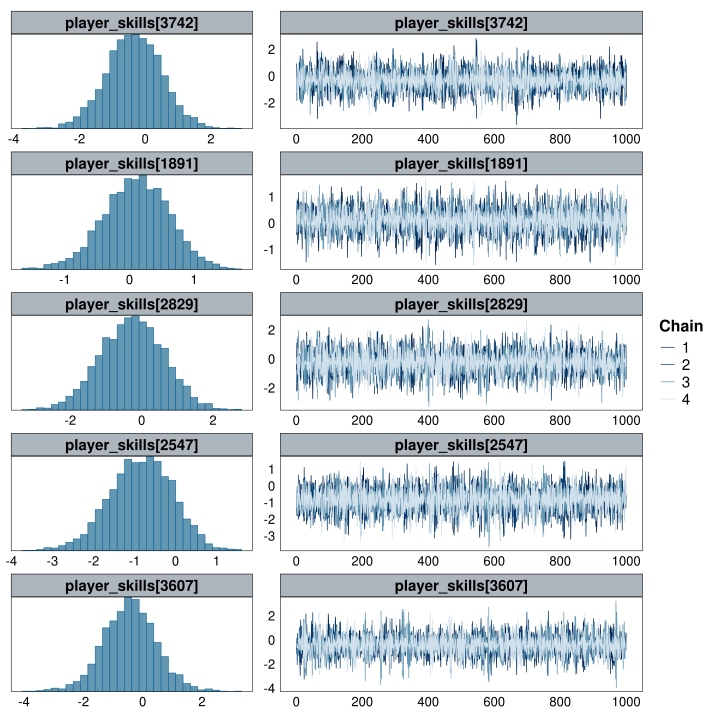
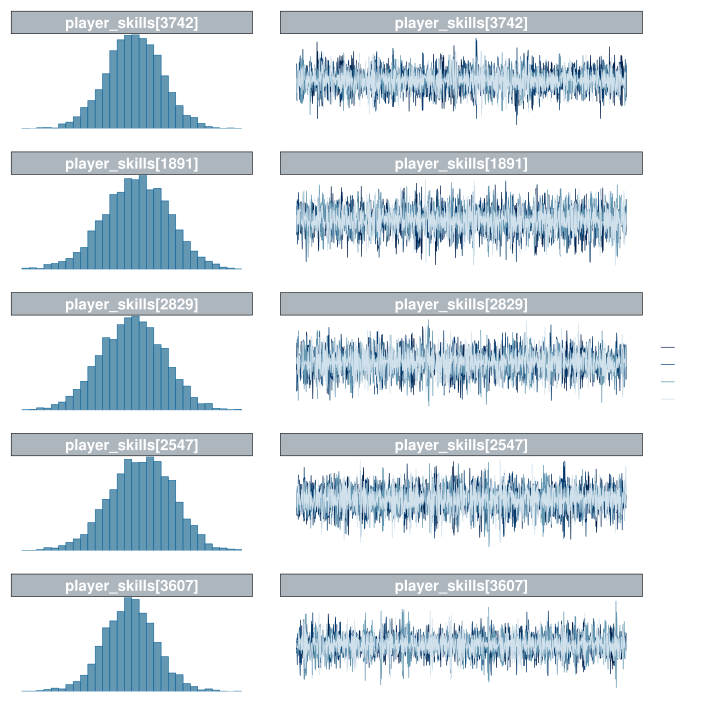

library(here) # Working directory management
library(fs) # File & folder manipulation
library(pipebind) # Piping goodies
library(archive) # Memory efficient object storage
library(cmdstanr) # Lightweight R interface for Stan
library(posterior) # Wrangling Stan models' output
library(data.table) # Fast data manipulation (in-RAM)
library(tibble) # Extending data.frames (Tidyverse)
library(readr) # Reading data from files (Tidyverse)
library(dplyr) # Manipulating data.frames - core (Tidyverse)
library(tidyr) # Manipulating data.frames - extras (Tidyverse)
library(stringr) # Manipulating strings (Tidyverse)
library(purrr) # Manipulating lists (Tidyverse)
library(lubridate) # Manipulating date/time (Tidyverse)
library(ggplot2) # Best plotting library (Tidyverse)
library(bayesplot) # PPC/Diagnostic plots for Stan models
library(patchwork) # Combining plots
options(
mc.cores = max(1L, parallel::detectCores(logical = TRUE)),
scipen = 999L,
digits = 4L,
ggplot2.discrete.colour = \() scale_color_viridis_d(),
ggplot2.discrete.fill = \() scale_fill_viridis_d()
)
nrows_print <- 10
setDTthreads(parallel::detectCores(logical = FALSE))
Caution
By design, this post contains very few explanations.
Its goal was simply to translate PyMC’s blog post to R, and update their Stan code to use within-chain parallelization and compiler optimizations, for a fairer speed comparison with PyMC.
Feel free to read the original blog post to better understand what the code is doing.
Tip
You can check the page’s source code by clicking on the </> Code button at the top-right.
Setup
NoteQuarto/knitr setup
Adding custom knitr hooks
#---------------------------#
####üî∫knitr custom hooks ####
#---------------------------#
library(knitr)
## Adding the `time_it` code chunk option
knitr::knit_hooks$set(time_it = local({
assign("TIMES", list(), .GlobalEnv)
start <- NULL
function(before, options) {
if (before) start <<- Sys.time()
else TIMES[[options$label]] <<- difftime(Sys.time(), start)
}
}))Applying a custom theme to all ggplot objects, both light and dark versions
#---------------------------#
####üî∫ggplot knit_prints ####
#---------------------------#
library(knitr)
library(ggplot2)
## Inspired by: https://debruine.github.io/quarto_demo/dark_mode.html
knit_print.ggplot <- function(x, options, ...) {
if(any(grepl("patchwork", class(x)))) {
plot_dark <- x & dark_addon_mar
plot_light <- x & light_addon_mar
} else {
plot_dark <- x + dark_addon_mar
plot_light <- x + light_addon_mar
}
cat('\n<div class="light-mode">\n')
print(plot_light)
cat('</div>\n')
cat('<div class="dark-mode">\n')
print(plot_dark)
cat('</div>\n\n')
}
registerS3method("knit_print", "ggplot", knit_print.ggplot)Applying a custom theme to all gt tables
#-----------------------#
####üî∫gt knit_prints ####
#-----------------------#
library(knitr)
library(gt)
knit_print.grouped_df <- function(x, options, ...) {
if ("grouped_df" %in% class(x)) x <- ungroup(x)
cl <- intersect(class(x), c("data.table", "data.frame"))[1]
nrows <- ifelse(!is.null(options$total_rows), as.numeric(options$total_rows), dim(x)[1])
is_open <- ifelse(!is.null(options[["details-open"]]), as.logical(options[["details-open"]]), FALSE)
cat(str_glue("\n<details{ifelse(is_open, ' open', '')}>\n"))
cat("<summary>\n")
cat(str_glue("\n*{cl} [{scales::label_comma()(nrows)} x {dim(x)[2]}]*\n"))
cat("</summary>\n<br>\n")
print(gt::as_raw_html(style_table(x, nrows)))
cat("</details>\n\n")
}
registerS3method("knit_print", "grouped_df", knit_print.grouped_df)
knit_print.data.frame <- function(x, options, ...) {
cl <- intersect(class(x), c("data.table", "data.frame"))[1]
nrows <- ifelse(!is.null(options$total_rows), as.numeric(options$total_rows), dim(x)[1])
is_open <- ifelse(!is.null(options[["details-open"]]), as.logical(options[["details-open"]]), FALSE)
cat(str_glue("\n<details{ifelse(is_open, ' open', '')}>\n"))
cat("<summary>\n")
cat(str_glue("\n*{cl} [{scales::label_comma()(nrows)} x {dim(x)[2]}]*\n"))
cat("</summary>\n<br>\n")
print(gt::as_raw_html(style_table(x, nrows)))
cat("</details>\n\n")
}
registerS3method("knit_print", "data.frame", knit_print.data.frame)Functions for interactive data presentation
#----------------------------------#
####üî∫knitr interactive display ####
#----------------------------------#
library(htmltools)
library(reactable)
## Getting list to display nicely in rendered documents
make_list_reactable <- function(list_dat) {
list_name <- deparse(substitute(list_dat))
get_list_elt_dim <- function(elt) {
list_elt <- list_dat[[elt]]
list_elt_dim <- if (any(c("data.frame", "matrix") %in% class(list_elt))) dim(list_elt) else length(list_elt)
return(paste0(list_elt_dim, collapse = ", "))
}
dat <- data.frame(names(list_dat)) |>
set_names(list_name) |>
mutate(
Type = unlist(pick(list_name)) |> map_chr(\(x) class(list_dat[[x]]) |> paste0(collapse = ", ")),
Dimensions = unlist(pick(list_name)) |> map_chr(get_list_elt_dim)
)
get_list_details <- function(dat, idx, max_print = 200, max_digits = 3) {
Element <- dat[[idx]]
style <- "padding: 0.5rem"
if (any(c("data.frame", "matrix") %in% class(Element))) {
reactable(data.frame(Element), outlined = TRUE, striped = TRUE, highlight = TRUE, compact = TRUE) |>
htmltools::div(style = style)
}
else if ("list" %in% class(Element))
make_list_reactable(Element)
else if (length(Element) > max_print) {
htmltools::div(
htmltools::p(head(Element, max_print) |> round(max_digits) |> paste0(collapse = ", ") |> paste("...", sep = ", ")),
htmltools::p(stringr::str_glue("[ omitted {length(Element) - max_print} entries ]"), style = "font-style: italic"),
style = style
)
}
else htmltools::div(round(Element, max_digits) |> paste0(collapse = ", "), style = style)
}
reactable(
dat
, defaultColDef = colDef(vAlign = "center", headerVAlign = "center")
, details = \(idx) get_list_details(list_dat, idx)
, outlined = TRUE
, striped = TRUE
, highlight = TRUE
, compact = FALSE
, fullWidth = TRUE
, defaultPageSize = 15
)
}
NoteStan setup
Installing CmdStan
## Skip this step if CmdStan is already installed
cmdstanr::check_cmdstan_toolchain(fix = TRUE, quiet = TRUE)
cpp_opts <- list(
stan_threads = TRUE
, STAN_CPP_OPTIMS = TRUE
, STAN_NO_RANGE_CHECKS = TRUE # WARN: remove this if you haven't tested the model
, PRECOMPILED_HEADERS = TRUE
# , CXXFLAGS_OPTIM = "-march=native -mtune=native"
, CXXFLAGS_OPTIM_TBB = "-mtune=native -march=native"
, CXXFLAGS_OPTIM_SUNDIALS = "-mtune=native -march=native"
)
cmdstanr::install_cmdstan(cpp_options = cpp_opts, quiet = TRUE)Loading CmdStan (if already installed)
highest_cmdstan_version <- dir_ls(config$cmdstan_path) |>
path_file() |>
keep(\(e) str_detect(e, "cmdstan-")) |>
bind(x, str_split(x, '-', simplify = TRUE)[,2]) |>
reduce(\(x, y) ifelse(utils::compareVersion(x, y) == 1, x, y))
set_cmdstan_path(str_glue("{config$cmdstan_path}cmdstan-{highest_cmdstan_version}"))Setting up knitr’s engine for CmdStan
## Inspired by: https://mpopov.com/blog/2020/07/30/replacing-the-knitr-engine-for-stan/
## Note: We could haved use cmdstanr::register_knitr_engine(),
## but it wouldn't include compiler optimizations & multi-threading by default
knitr::knit_engines$set(
cmdstan = function(options) {
output_var <- options$output.var
if (!is.character(output_var) || length(output_var) != 1L) {
stop(
"The chunk option output.var must be a character string ",
"providing a name for the returned `CmdStanModel` object."
)
}
if (options$eval) {
if (options$cache) {
cache_path <- options$cache.path
if (length(cache_path) == 0L || is.na(cache_path) || cache_path == "NA") {
cache_path <- ""
}
dir <- paste0(cache_path, options$label)
} else {
dir <- tempdir()
}
file <- cmdstanr::write_stan_file(options$code, dir = dir, force_overwrite = TRUE)
mod <- cmdstanr::cmdstan_model(
stan_file = file,
cpp_options = list(
stan_threads = TRUE
, STAN_CPP_OPTIMS = TRUE
, STAN_NO_RANGE_CHECKS = TRUE # The model was already tested
, PRECOMPILED_HEADERS = TRUE
# , CXXFLAGS_OPTIM = "-march=native -mtune=native"
, CXXFLAGS_OPTIM_TBB = "-mtune=native -march=native"
, CXXFLAGS_OPTIM_SUNDIALS = "-mtune=native -march=native"
),
stanc_options = list("O1"),
force_recompile = TRUE
)
assign(output_var, mod, envir = knitr::knit_global())
}
options$engine <- "stan"
code <- paste(options$code, collapse = "\n")
knitr::engine_output(options, code, '')
}
)1 Data
1.1 Matches data
Loading the matches’ data:
Filtering and cleaning the combined matches’ data (based on the original post’s data processing):
round_numbers = list(
"R128" = 1,
"RR" = 1,
"R64" = 2,
"R32" = 3,
"R16" = 4,
"QF" = 5,
"SF" = 6,
"F" = 7
)
(matches_data_clean <- matches_data_raw
|> filter(
tourney_date %between% c("1968-01-01", "2021-06-20"),
str_detect(score, "RET|W/O|DEF|nbsp|Def.", negate = TRUE),
str_length(score) > 4,
tourney_level != "D",
round %in% names(round_numbers)
)
|> mutate(
round_number = recode(round, !!!round_numbers),
label = 1
)
|> arrange(tourney_date, round_number)
|> select(-round, -tourney_level)
)data.frame [160,399 x 8]
| [ omitted 160,384 entries ] |
1.2 Player data
Loading the raw player data:
data.frame [55,649 x 2]
| [ omitted 55,634 entries ] |
Filtering player_data to only keep the players actually present in our data, and updating their IDs:
1.3 Matches + Player data
Allocating the new player IDs (player_idx) to the winner_id and loser_id from matches_data:
(matches_data <- left_join(matches_data_clean, player_data, by = c("winner_id" = "player_id"))
|> rename(winner_idx = player_idx)
|> relocate(winner_idx, .after = winner_id)
|> left_join(player_data, by = c("loser_id" = "player_id"))
|> rename(loser_idx = player_idx)
|> relocate(loser_idx, .after = loser_id)
|> drop_na(winner_idx, loser_idx)
|> select(-matches("player_name"))
)data.frame [160,399 x 10]
| [ omitted 160,384 entries ] |
2 Model
2.1 Stan code
Updated Stan code with within-chain parallelization
tennis_model
functions {
array[] int sequence(int start, int end) {
array[end - start + 1] int seq;
for (n in 1 : num_elements(seq)) {
seq[n] = n + start - 1;
}
return seq;
}
// Compute partial sums of the log-likelihood
real partial_log_lik_lpmf(array[] int seq, int start, int end,
data array[] int labels,
data array[] int winner_ids,
data array[] int loser_ids,
vector player_skills) {
real ptarget = 0;
int N = end - start + 1;
vector[N] mu = rep_vector(0.0, N);
for (n in 1 : N) {
int nn = n + start - 1;
mu[n] += player_skills[winner_ids[nn]] - player_skills[loser_ids[nn]];
}
ptarget += bernoulli_logit_lpmf(labels[start : end] | mu);
return ptarget;
}
}
data {
int n_players;
int n_matches;
array[n_matches] int<lower=1, upper=n_players> winner_ids; // Winner of game n
array[n_matches] int<lower=1, upper=n_players> loser_ids; // Loser of game n
array[n_matches] int<lower=0, upper=1> labels; // Always 1 in this model
int grainsize;
}
transformed data {
array[n_matches] int seq = sequence(1, n_matches);
}
parameters {
real<lower=0> player_sd; // Scale of ability variation (hierarchical prior)
vector[n_players] player_skills; // Ability of player k
}
model {
player_sd ~ std_normal();
player_skills ~ normal(0, player_sd);
target += reduce_sum(
partial_log_lik_lpmf, seq, grainsize,
labels, winner_ids, loser_ids, player_skills
);
}2.2 Stan data
2.3 Model fit
tennis_mod_fit <- tennis_model$sample(
data = tennis_stan_data, seed = 256,
iter_warmup = 1000, iter_sampling = 1000, refresh = 0,
chains = 4, parallel_chains = 4, threads_per_chain = 7
)
Note
Sampling takes ~2.81 minutes on my CPU (Ryzen 5950X, 16 Cores/32 Threads), on WSL2 (Ubuntu 22)
data.table [4 x 2]
3 Model diagnostics
Plotting the traces & acf for a random subsets of players:
wrap_plots(
mcmc_hist(tennis_draws_subset, facet_args = list(nrow = length(tennis_draws_subset[[1]]))),
mcmc_trace(tennis_draws_subset, facet_args = list(nrow = length(tennis_draws_subset[[1]]))),
widths = c(1, 1.5)
)


Everything seems good enough.
4 Posterior Predictions
4.1 Posterior data
Getting our Posterior Predictions into long format and joining the result with player_data:
(player_skills <- tennis_mod_fit$draws(variables = "player_skills")
|> bind(x, subset_draws(x, "player_skills", regex = TRUE, draw = sample.int(ndraws(x), size = 500)))
|> as.data.table()
|> _[, .(player_skills = list(value)), by = variable
][, let(player_idx = as.integer(str_extract(variable, "\\d{1,4}")), variable = NULL)
][, let(skill_mean = sapply(player_skills, mean), skill_sd = sapply(player_skills, sd))
][as.data.table(player_data), on = "player_idx", nomatch = NULL
][order(-skill_mean), .(player_name, player_id, player_idx, skill_mean, skill_sd, player_skills)]
)data.table [4,830 x 6]
| [ omitted 4,815 entries ] |
4.2 Posterior plots
ridgeline_plot
ridgeline_plot <- function(dat, var) {
dat <- dat[, .(player_skills = unlist(player_skills)), by = setdiff(names(dat), 'player_skills')
][, player_name := factor(player_name, levels = rev(unique(player_name)))]
return(
ggplot(dat, aes(player_skills, y = {{ var }}, fill = {{ var }}))
+ geom_ribbon(
stat = "density", outline.type = "upper", color = "grey30",
aes(
fill = stage({{ var }}, after_scale = alpha(fill, 0.5)),
ymin = after_stat(group),
ymax = after_stat(group + ndensity * 1.6)
)
)
* ggblend::blend("multiply")
+ labs(x = "Player Skills", y = "")
+ scale_y_discrete(position = "right", labels = \(x) str_replace_all(x, "\\s", "\n"))
+ theme(legend.position = "none", axis.line.y = element_blank())
)
}Plotting the player_skills posteriors of the top 10 players:
Tipüíª Expand for Session Info
─ Session info ───────────────────────────────────────────────────────────────
setting value
version R version 4.5.1 (2025-06-13)
os Ubuntu 22.04.5 LTS
system x86_64, linux-gnu
ui X11
language (EN)
collate C.UTF-8
ctype C.UTF-8
tz Europe/Oslo
date 2025-09-21
pandoc 2.9.2.1
quarto 1.8.17 @ /opt/quarto/bin/quarto
Quarto 1.8.17
Stan (CmdStan) 2.37.0
─ Packages ───────────────────────────────────────────────────────────────────
! package * version date (UTC) lib source
P archive * 1.1.12 2025-03-20 [?] CRAN (R 4.5.1)
P bayesplot * 1.14.0.9000 2025-09-08 [?] https://stan-dev.r-universe.dev (R 4.5.1)
P cmdstanr * 0.9.0 2025-03-30 [?] https://stan-dev.r-universe.dev (R 4.5.1)
P crayon * 1.5.3 2024-06-20 [?] CRAN (R 4.5.1)
P data.table * 1.17.8 2025-07-10 [?] CRAN (R 4.5.1)
P dplyr * 1.1.4 2023-11-17 [?] CRAN (R 4.5.1)
P fs * 1.6.6 2025-04-12 [?] CRAN (R 4.5.1)
P ggplot2 * 4.0.0 2025-09-11 [?] CRAN (R 4.5.1)
P gt * 1.0.0 2025-04-05 [?] CRAN (R 4.5.1)
P here * 1.0.2 2025-09-15 [?] CRAN (R 4.5.1)
P htmltools * 0.5.8.1 2024-04-04 [?] CRAN (R 4.5.1)
P knitr * 1.50 2025-03-16 [?] CRAN (R 4.5.1)
P lubridate * 1.9.4 2024-12-08 [?] CRAN (R 4.5.1)
P patchwork * 1.3.2 2025-08-25 [?] CRAN (R 4.5.1)
P pipebind * 0.1.2 2023-08-30 [?] CRAN (R 4.5.1)
P posterior * 1.6.1 2025-02-27 [?] CRAN (R 4.5.1)
P purrr * 1.1.0 2025-07-10 [?] CRAN (R 4.5.1)
P reactable * 0.4.4 2023-03-12 [?] CRAN (R 4.5.1)
P readr * 2.1.5 2024-01-10 [?] CRAN (R 4.5.1)
P stringr * 1.5.2 2025-09-08 [?] CRAN (R 4.5.1)
P tibble * 3.3.0 2025-06-08 [?] CRAN (R 4.5.1)
P tidyr * 1.3.1 2024-01-24 [?] CRAN (R 4.5.1)
[1] /home/mar/Dev/Projects/R/ma-riviere.com/renv/library/linux-ubuntu-jammy/R-4.5/x86_64-pc-linux-gnu
[2] /home/mar/.cache/R/renv/sandbox/linux-ubuntu-jammy/R-4.5/x86_64-pc-linux-gnu/25ebdc09
* ── Packages attached to the search path.
P ── Loaded and on-disk path mismatch.
──────────────────────────────────────────────────────────────────────────────Citation
BibTeX citation:
@online{rivière2022,
author = {Rivière, Marc-Aurèle},
title = {MCMC for “{Big} {Data}” with {Stan}},
date = {2022-06-05},
url = {https://ma-riviere.com/content/blog/posts/big-bayes/},
langid = {en},
abstract = {This post is an extension (and a translation to R) of
{[}PyMC-Labs’
benchmarking{]}(https://www.pymc-labs.io/blog-posts/pymc-stan-benchmark/)
of MCMC for “Big Data”. The Stan code was updated to use
{[}within-chain
parallelization{]}(https://mc-stan.org/docs/2\_30/stan-users-guide/reduce-sum.html)
and {[}compiler
optimization{]}(https://mc-stan.org/docs/2\_30/stan-users-guide/optimization.html)
for faster CPU sampling. Stan was able to achieve similar sampling
speeds as PyMC’s JAX + GPU solution, purely on CPU.}
}
For attribution, please cite this work as:
Rivière, M.-A. (2022, June 5). MCMC for “Big Data” with
Stan. https://ma-riviere.com/content/blog/posts/big-bayes/